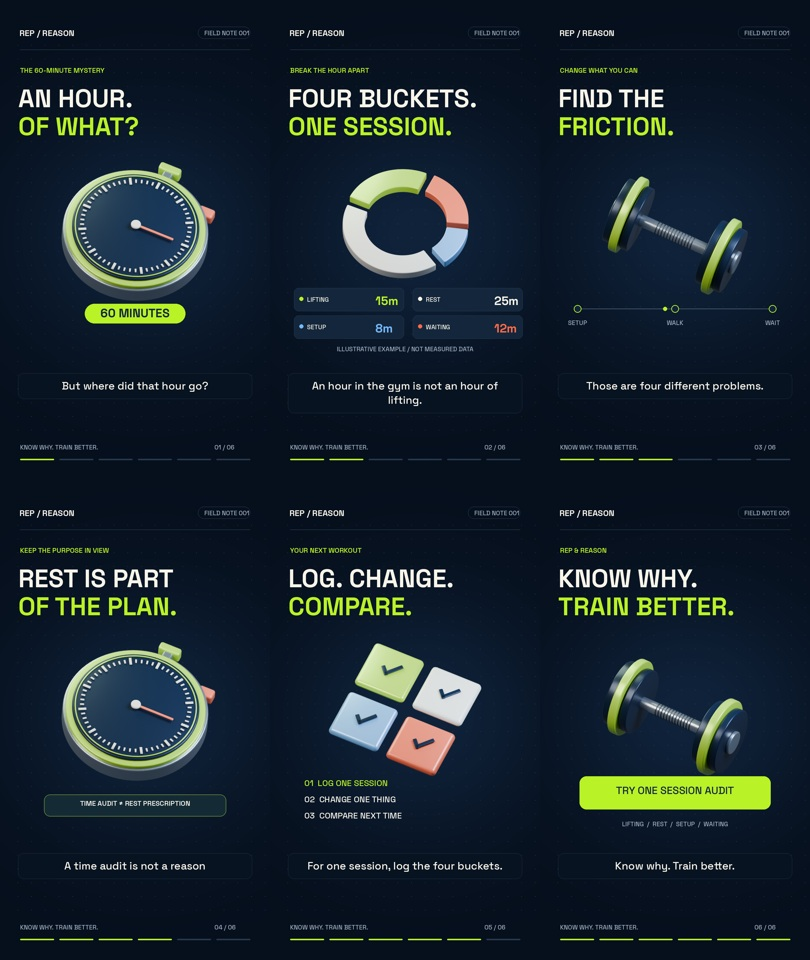

<!doctype html><html lang="en"><meta charset="utf-8"><meta name="viewport" content="width=device-width,initial-scale=1"><title>Rep & Reason · Blender MVP</title>
<style>body{margin:0;background:#081321;color:#f7f4ea;font:17px/1.6 system-ui,sans-serif}main{max-width:1120px;margin:auto;padding:40px 24px}.tag{color:#b9f227;font-size:13px;letter-spacing:.15em}h1{font-size:clamp(30px,5vw,56px);line-height:1.1;max-width:700px}a{color:#b9f227}section{display:grid;grid-template-columns:minmax(260px,420px) 1fr;gap:50px;align-items:start}video{width:100%;max-height:82vh;border-radius:18px;background:#050b13}aside{max-width:530px}img{width:100%;border-radius:14px}.note{color:#9eadbf;font-size:14px}.links{display:flex;gap:20px;flex-wrap:wrap;margin:22px 0}@media(max-width:720px){section{grid-template-columns:1fr}main{padding:24px 18px}video{max-height:75vh}}</style>
<main><div class="tag">REP / REASON · FIELD NOTE 001</div><h1>An hour.<br>Of what?</h1><section><video controls playsinline preload="metadata" poster="poster.jpg"><source src="Rep_and_Reason_Blender_MVP.mp4" type="video/mp4"></video><aside><h2>A complete visual MVP</h2><p>A short fitness explainer with editable Blender animation, synthetic narration, captions and original sound.</p><div class="links"><a href="Rep_and_Reason_Blender_MVP.mp4" download>Download video</a><a href="time-audit.blend" download>Blender project</a><a href="captions.srt" download>Captions</a><a href="README.md">Build guide</a></div><p class="note">The time split is an invented example. This is a creative review export; no audience test or public release is claimed.</p><p class="note">Know why. Train better.</p></aside></section></main></html>
